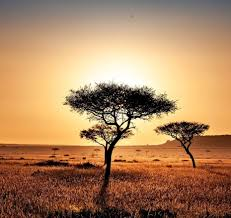

Nos Habitats
Savane Africaine
La savane africaine est un vaste espace ouvert où vivent des animaux tels que :
- Lions
- Éléphants
- Girafes
- Zèbres
La Forêt Tropicale
La forêt tropicale est un habitat dense et humide abritant des animaux comme :
- Gorilles
- Tigres
- Perroquets
- Serpents
Le Désert
Le désert est un environnement aride où l'on peut trouver des animaux tels que :
- Dromadaires
- Fennecs
- Scorpions
- Serpents des sables
La Zone Polaire
La zone polaire est un habitat froid et glacé où vivent des animaux comme :
- Ours polaires
- Pingouins
- Phoques
- Renards arctiques
La Forêt Tempérée
La forêt tempérée est un habitat avec des saisons marquées, abritant des animaux tels que :
- Cerfs
- Renards
- Hiboux
- Écureuils